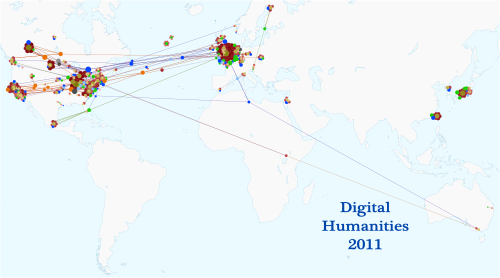

John Unsworth was good enough to send me the participant list for the upcoming Digital Humanities 2011 Conference and I tried to put together a few interesting visualizations of the participants, sessions and institutions that will make up this year’s meeting.


A map of DH11 participants based on university affiliation